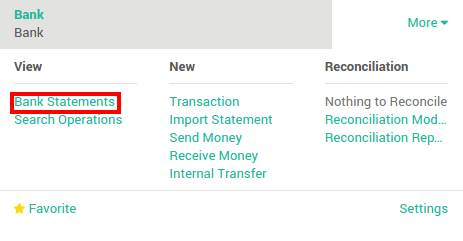

Overview
With Odoo, you can import your bank statements, synchronize with your bank but also register your bank statements manually.
Configuration
No special configuration is necessary to register invoices. All you need to do is install the accounting app.

Register bank statements manually
Create your Bank Statements
In the Dashboard, click on the button New Statement related to the bank journal. If some reconciliations need to be done, the New Statement link will be found underneath.

Just fill in the fields according the the information written on your bank statement. The reference can be filled in manually or you can leave it empty. We recommend to fill in the partner to ease the reconciliation process.
The difference between the starting balance and the ending balance should be equal to the computed balance.

When you are done, click on Save.
Reconcile your Bank Statements
You can choose to directly reconcile the statement by clicking on the button
You can also start the reconciliation process from the dashboard by clicking on Reconcile # Items.
Click on Validate to reconcile your bank statement. If the partner is missing, Odoo will ask you to select a partner.

Tip
Hit CTRL-Enter to reconcile all the balanced items on the sheets.
Close Bank Statements from the reconciliation
If the balance is correct, you can directly close the statement from the reconciliation by clicking on .
Otherwise, click on to open the statement and correct the issue.
Close Bank Statements
On the accounting dashboard, click on the More button of your bank journal, then click on Bank Statements.
To close the bank statement, just click on Validate.